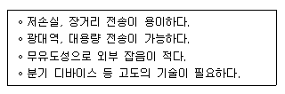
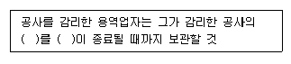

통신설비기능장 (2015-10-04 기출문제)
1과목: 임의 과목 구분(20문항)
1. 가입자 선로 폐쇄(Line Lock Out)란 무엇인가?
- 무위한 점유를 방지하는 기능
- 전자교환기의 중요한 기능
- 서비스를 균등히 하는 기능
- 대표번호를 부여하는 기능
(정답률: 94%)

2. 전자(電磁:EMD,ST형)식에 비해 전자(電子) 교환기의 장점이 아닌 것은?
- 특수한 통화 서비스를 받을 수 있다.
- 소비전력이 크게 절약된다.
- 교환실의 용적에 크게 감소된다.
- 동일한 통화수에 대해 전송로 수가 크게 증대한다.
(정답률: 75%)
3. 다음 중 DPCM 송신기의 구성요소가 아닌 것은?
- 양자화기
- 예측기
- 복호기
- 부호화기
(정답률: 88%)
4. 전화선의 채널대역폭이 6,000[Hz]이고 채널의 출력 S/N=10,000인 경우 통신용량은? (단, log210=3.322로 하고 근사치로 계산한다.)
- 18,063[bit/sec]
- 19,063[bit/sec]
- 79,728[bit/sec]
- 79,968[bit/sec]
(정답률: 72%)
5. 발신국 제어(End-to-End) 방식에 대한 설명으로 틀린 것은?
- 발신국 교환기는 중계국까지만 신호를 전송하면 중계국이 다음 중계국이나 착신국으로 신호를 전송하는 방식이다.
- 이 신호방식은 타 신호방식과의 정합이 어렵다.
- 발신측 교환기에서 다음 중계교환기를 제어하는데 필요한 신호만 보내주어 착신측 교환기에 연결될 때까지 발신측 교환기의 신호기가 계속 제어를 담당하는 방식이다.
- 중계국의 신호장치는 신호수신 기능만 갖고 신호의 재생중계가 없으므로 신호전송시 전송로 품질에 크게 영향을 받고 발신국 신호 송신기는 광범위한 기능을 수행할 필요가 있다.
(정답률: 84%)
6. 다음 통신 방식 중 송신, 수신을 각각 독립한 회선을 통해서 행하는 통신으로 동시에 양방향 전송이 가능한 방식은?
- 단방향(Simplex) 통신
- 반이중(Half Duplex) 통신
- 전이중(Full Duplex) 통신
- 반 단방향(Half Simplex) 통신
(정답률: 93%)
7. 다음 중 Softwire를 통한 전송 방법에 속하는 것은?
- 동축 케이블
- 광섬유 케이블
- 마이크로파 통신
- 트위스트 페어 케이블
(정답률: 79%)
8. 디지털 신호의 펄스열을 그대로 또는 다른 형식의 펄스 파형으로 변환시켜 전송하는 방식은?
- 기저 대역 전송 방식
- 반송 대역 전송 방식
- 광대역 전송 방식
- 협대역 전송 방식
(정답률: 85%)
9. HDLC(High-level Data Link Control)의 데이터 동작모드에서 주국의 허가 없이도 송신이 가능한 모드는?
- 표준 균형 모드
- 표준 응답 모드
- 비동기 균형 모드
- 비동기 응답 모드
(정답률: 77%)
10. 회선을 측정한 결과 통화신호의 세기 레벨이 -5[dBm]이고, 잡음 세기의 레벨이 -60[dBm]일 때 S/N 비는 얼마인가?
- 12[dB]
- 55[dB]
- 65[dB]
- 300[dB]
(정답률: 86%)
11. 다음 중 FM송신기에 포함되는 회로는?
- 프리엠파시스 회로
- 위상편이 회로
- 스퀠치 회로
- 진폭제한기
(정답률: 84%)
12. 최대 주파수편이가 30[kHz]이고 2[kHz]의 신호주파수로 변조하였을 때 변조지수는?
- 5
- 10
- 15
- 20
(정답률: 87%)
13. 다음 중 자동이득제어(AGC) 회로의 원리 및 동작에 관한 설명으로 잘못된 것은?
- AGC 전압을 인가하는 진공관은 가변증폭율 관이다.
- AGC 출력 전압의 크기는 입력전압에 비례한다.
- AGC 회로를 사용하면 이득은 떨어진다.
- 음질을 좋게하기 위하여 저주파증폭단에 인가한다.
(정답률: 71%)
14. FM수신기에서의 스퀠치회로에 대한 설명으로 맞지 않는 것은?
- 잡음이 클 경우 자동으로 주파수를 조정한다.
- 잡음 정류기능을 갖고 있다.
- 수신신호가 약하거나 없을 때 잡음출력이 커지는 것을 방지한다.
- 잡음이 신호레벨보다 커지면 저주파증폭기를 차단하여 잡음을 억제한다.
(정답률: 70%)
15. 특성 임피던스 ZO=5[Ω]인 급전선상의 전압 정재파비가 2일 때 부하 임피던스 ZR은?
- 4[Ω]
- 10[Ω]
- 20[Ω]
- 40[Ω]
(정답률: 86%)
16. 마이크로파 통신에서 송신출력이 2[W], 송ㆍ수신 안테나 이득이 각각 35[dBi], 수신 입력 레벨이 -30[dBm]일 때 자유공간 손실은?
- 110[dB]
- 125[dB]
- 133[dB]
- 142[dB]
(정답률: 67%)
17. 다음 중 위성지구국 설치 시 고려하여야 할 주변환경과 거리가 먼 것은?
- 지형조건
- 인공잡음
- 기상조건
- 위성과의 거리
(정답률: 92%)
18. 다음 중 지구국을 구성하는 기본장치에 해당되지 않는 것은?
- 안테나계
- 저잡음 수신계
- 고전력 증폭계
- 프로펠런트(Propellant)계
(정답률: 87%)
19. 주파수 공용 통신 시스템(TRS)의 특징이 아닌 것은?
- 통화 범위가 넓다.
- 통화 요금이 비싸다.
- 혼신이 적다.
- 즉시 음성 통화가 가능하다.
(정답률: 91%)
20. 2[GHz]의 주파수를 사용하는 이동통신에서 차량이 시속 100[km]로 이동할 때 최대 도플러 주파수는 몇 [Hz]인가?
- 67.7
- 87.3
- 93.5
- 185.2
(정답률: 55%)
2과목: 임의 과목 구분(20문항)
21. 다음 중 디지털 TRS(주파수공용통신)에 대한 설명으로 가장 적합하지 않은 것은?
- 호 우선순위 등 특수 서비스가 가능하다.
- 사용주파수 대역은 PCS와 같이 2[GHz] 대역을 사용한다.
- 업무용 무전기에 비해서 채널(시스템) 효율이 매우 높다.
- 음성서비스, 데이터서비스, 부가서비스를 제공하며, 음성서비스에는 긴급통화, 그룹통화 등이 포함된다.
(정답률: 82%)
22. 다음 중 OSI 참조모델의 각 계층의 역할에 대한 설명으로 잘못된 것은?
- 응용계층 : 사용자가 네트워크에 접근할 수 있도록 사용자 인터페이스를 제공
- 표현계층 : 보안을 위한 데이터 암호화 및 필요시 효율적인 데이터 전송을 위한 데이터 압축 수행
- 네트워크계층 : 패킷이 최종 목적지까지 안전하게 전달될 수 있도록 경로를 지정하거나 교환기능을 제공
- 데이터링크계층 : 실제 비트 정보가 흐르는 물리적인 통로를 제공
(정답률: 79%)
23. OSI 7 Layer 기준 모델의 계층과 주요 기능이 잘못 연결된 것은?
- 표현 계층(Presentation Layer) - 데이터 표현 방식 변환
- 세션 계층(Session Layer) - 응용 개체들 간의 대화, 동기화 제어
- 데이터링크 계층(Data link Layer) - 경로 배정, 호 설정 및 해지
- 물리 계층(Physical Layer) - 기계적, 전기적인 통신망 연결
(정답률: 78%)
24. PSTN 교환기에서 정보 교환 방식의 분류기준이 다른 것은?
- 데이터그램 방식
- 가상회선 방식
- 메시지 교환 방식
- 회선 교환 방식
(정답률: 62%)
25. 흐름제어에 사용되는 방법이 아닌 것은?
- CRC
- RTS/CTS
- Xon/Xoff
- sliding window
(정답률: 79%)
26. LAP-B(Link Access Procedure, Balanced)에 대한 설명 중 틀린 것은?
- 데이터링크 계층에서 전송제어 절차를 규정한다.
- 여러 개의 논리적 링크로 양단에서 다중화 채널을 구성할 수 있다.
- 프레임은 Flag, 주소, 제어, 데이터, FCS, Flag로 구성된다.
- X.25 패킷교환을 위해 개발된 점대점 데이터링크 접속용 프로토콜 표준이다.
(정답률: 51%)
27. IPTV에서 1GByte 용량의 영화를 1Gbps 전송속도로 다운로드하면 소요시간은?
- 1초
- 2초
- 4초
- 8초
(정답률: 88%)
28. 다음 중 프로토콜의 구성요소가 아닌 것은?
- 형식(syntax)
- 의미(semantics)
- 타이밍(timimg)
- 캡슐화(encapsulation)
(정답률: 83%)
29. IPv4 네트워크 주소 체계의 범위가 옳게 나열된 것은?
- A class : 0.0.0.1 ~ 127.255.255.255
- B class : 128.1.0.0 ~ 191.255.255.255
- C class : 192.0.0.1 ~ 223.255.255.254
- D class : 224.0.0.0 ~ 239.255.255.254
(정답률: 86%)
30. 서브넷마스크에 대한 설명으로 맞지 않는 것은?
- IP주소에서 네트워크 주소와 호스트 주소를 구별하는 구별자 역할을 한다.
- 32비트로 이루어져 있다.
- 서브넷 비트열이 ‘0’이면 네트워크 부분으로 인식된다.
- 서브넷 비트열이 ‘0’이면 호스트 주소로 인식된다.
(정답률: 88%)
31. 다음 중 공개키 암호화 방식에 대한 설명으로 적합하지 않은 것은?
- 안전한 인증이 용이하다.
- 암호화하는 처리 속도가 느리다.
- 암호화하는 경우 비밀키를 사용한다.
- 암호화와 복호화에 사용하는 키가 서로 다르다.
(정답률: 69%)
32. 저작권을 보호하고자 하는 대상 미디어에 저작권 정보를 담고 있는 로고나 이미지를 삽입하는 기술을 무엇이라 하는가?
- DRM
- Watermarking
- DOI
- INDECS
(정답률: 90%)
33. 다음은 전송 선로의 한 종류의 특징을 설명한 것이다. 서술한 내용 중 알맞은 전송 선로는 무엇인가?

- UTP 케이블
- FS 케이블
- 광케이블
- 동축케이블
(정답률: 91%)
34. 다음 중 동축케이블에 대한 설명 중 바르지 못한 것은?
- TV 분배, 장거리 전화 전송, LAN, 짧은 시스템 링크 등 가장 용도가 다양한 전송 매체로 아날로그, 디지털 신호에 모두 사용된다.
- 높은 주파수와 빠른 데이터 전송에 효과적으로 사용되므로, 광대역 전송에 부적합하다.
- 아날로그신호에서 주파수가 높을수록 증폭기의 간격이 좁아지므로 몇 [km]마다 증폭기가 필요하다.
- 디지털 전송속도가 빠를수록 리피터의 간격이 좁아져야 하므로 몇 [km]마다 리피터가 필요하다.
(정답률: 77%)
35. 다음 중 분포정수회로에서 1차 정수에 해당되는 것은?
- 감쇠정수(α)
- 위상정수(β)
- 인덕턴스(L)
- 특성임피던스(Zo)
(정답률: 80%)
36. 다음 중 WDM(파장분할다중화) 기술에 대한 설명으로 적합하지 않은 것은?
- 여러 채널을 광학적으로 다중화하여 한 개의 광섬유를 통해 전송한다.
- 광섬유의 손실이 적은 1,310[nm] 영역이 주로 사용된다.
- 장거리 전송을 위해 EDFA 등 광증폭기가 필요하다.
- 변조방법, 아날로그/디지털 등의 전송형태에 관계없이 광신호의 전달에도 이용될 수 있다.
(정답률: 83%)
37. 다중모드(Multi Mode) 광섬유와 비교하여 단일모드(Single Mode) 광섬유의 특징이 아닌 것은?
- 고속, 대용량 전송이 불가능하다.
- 분산과 손실이 적다.
- 장거리 전송에 적합하다.
- 전송대역이 광대역이다.
(정답률: 83%)
38. 코어와 클래드의 관계가 클래드 부분에서 계단적으로 변화하는 형으로 광섬유를 지나는 광의 전파모드가 일정하여 광대역 폭이 놃고 고속 전송이 가능한 단일모드 광섬유는?
- SI형 SMF
- SI형 MMF
- GI형 SMF
- GI형 MMF
(정답률: 80%)
39. 광파이버의 굴절율이 전파하는 광의 파장에 따라 변화함으로써 생기는 분산을 무엇이라 하는?
- 모드분산
- 구조분산
- 재료분산
- 편광분산
(정답률: 79%)
40. 다음 중 광섬유 케이블의 장점이 아닌 것은?
- 전기적 무유도현상
- 많은 중계기가 필요
- 광대역
- 초고속 대용량
(정답률: 91%)
3과목: 임의 과목 구분(20문항)
41. 전압의 측정 범위를 넓히기 위하여 사용하는 것은?
- 배율기
- 분류기
- 분압기
- 변류기
(정답률: 86%)
42. 다음 중 전기장(전계) 강도 측정기에서 일반적으로 사용되는 안테나는?
- 애드콕 안테나
- 야기 안테나
- 빔 안테나
- 루프 안테나
(정답률: 79%)
43. 수신기의 성능 중 얼마나 미약한 전파까지를 수신할 수 있는가의 극한을 표시하는 양으로 종합이득과 내부의 잡음에 의해서 결정되는 것은?
- 감도
- 선택도
- 충실도
- 안정도
(정답률: 88%)
44. 일반적으로 지시계기에 많이 사용하는 제어장치는?
- 자기적 제어
- 전기적 제어
- 중력 제어
- 스프링 제어
(정답률: 74%)
45. 수신기의 감도 측정시 필요하지 않는 것은?
- 표준 신호 발생기
- 의사 공중선
- 진공관 전압계(VTVM)
- 공중선 전류계
(정답률: 69%)
46. 광섬유케이블을 A 방향에서 B 방향으로 측정한 접속손실 값이 0.⑤[dB], B 방향에서 A 방향으로 측정한 접속손실 값이 0.1[dB]이었다면 이 접속지점의 평균접속손실 값은 몇 [dB]인가?
- 0.025[dB]
- 0.⑤[dB]
- 0.075[dB]
- 0.15[dB]
(정답률: 84%)
47. 다음 중 광섬유 측정 시 주의사항과 관계가 없는 것은?
- 측정기의 광원에서 나오는 레이저(Laser)광은 눈으로 들여다보지 말아야 한다.
- 광섬유는 측정기의 전원을 켜고 바로 측정하여도 안정된 측정을 할 수 있다.
- 측정기의 보호 및 전자파에 의한 영향을 감소시키기 위해 측정기 접지단자를 접지시킨다.
- 광섬유 측정에서는 여진조건에 의해 측정결과가 크게 좌우되므로 충격이나 진동이 가해지지 않도록 한다.
(정답률: 84%)
48. 전원회로에서 부하에 가해지는 출력 직류전압이 50[V]이고 맥동률이 1[%]이면 출력 맥동전압 최대치는 약 몇 [V]인가?
- 0.5[V]
- 0.7[V]
- 1[V]
- 1.4[V]
(정답률: 58%)
49. 다음 중 방송통신을 통한 국민의 복리 향상과방송통신의 원활한 발전을 위하여 방송통신기본계획을 수립하고 이를 공고하여야 할 사항이 아닌 것은?
- 방송통신기술의 개발과 생산 및 수출에 관한 사항
- 방송통신설비 및 방송통신에 이용되는 유ㆍ무선 망에 관한 사항
- 방송통신의 보편적 서비스 제공 및 공공성 확보에 관한 사항
- 방송통신의 남북협력 및 국제협력에 관한 사항
(정답률: 87%)
50. 다음 중 「정보통신공사업법 시행령」에서 정하는 “통신설비 공사”에 해당되지 않는 것은?
- 통신선로 설비 공사
- 방송전송ㆍ선로 설비 공사
- 고정무선통신 설비 공사
- 이동통신 설비 공사
(정답률: 81%)
51. 다음 중 홈네트워크 설비 중 홈게이트웨이의 설치에 대한 설명이 틀린 것은?
- 홈게이트웨이는 동작상태와 케이블의 연결상태를 확인할 필요가 없으므로 보이지 않는 공간에 설치해도 된다.
- 홈게이트웨이는 세대단자함 또는 세대통합관리반에 설치할 수 있다.
- 세대단자함 또는 세대통합관리반에 설치되는 홈게이트웨이는 벽에 부착할 수 있어야 하며 동작에 필요한 전원이 공급되어야 한다.
- 홈게이트웨이는 이상전원 발생시 제품을 보호할 수 있는 기능을 내장하여야 한다.
(정답률: 92%)
52. 다음 중 「방송통신설비의 안전성 및 신뢰성에 대한 기술기준」에서 정하는 옥외설비 설치 시 마련하여야할 대책이 아닌 것은?
- 풍해 대책
- 낙뢰 대책
- 화재 대책
- 저습도 대책
(정답률: 91%)
53. 다음은 정보통신공사업법령에서 규정한 설계 도서의 보관 의무에 관한 사항이다. 괄호 안에 들어갈 내용으로 알맞은 것은?

- 실시설계도서 - 하자담보책임기간
- 실시설계도서 - 준공검사기간
- 준공설계도서 - 하자담보책임기간
- 준공설계도서 - 준공검사기간
(정답률: 71%)
54. 용역업자는 공사에 대한 감리를 완료한 때 공사가 완료된 날부터 며칠 이내에 발주자에게 감리결과를 통보하여야 하는가?
- 5일
- 7일
- 10일
- 14일
(정답률: 91%)
55. 샘플링 검사의 목적으로 가장 적절하지 못한 것은?
- 공정단축을 위한 시행
- 제품이나 재료의 합격, 불합격을 판정
- 검사비용을 절감
- 생산자의 품질향상을 자극
(정답률: 81%)
56. C관리도에 속하는 것은?
- 화학분석치
- 전구꼬지의 불량률
- 규격외품의 비율
- 라디오 한대 중 납땜 불량개수
(정답률: 83%)
57. 공수계획의 기본적인 방침이 아닌 것은?
- 부하와 능력의 균형화
- 가동률의 향상
- 일정별 부하의 변동방지
- 가공방법의 합리화
(정답률: 73%)
58. 특수용도의 통신단말기를 대량으로 제조하고자 한다. 해당 제품은 표준화가 이루어져 있고, 원활한 원자재 공급이 가능하다. 따라서 컨베이어 라인을 구성 할 계획이다. 이것은 어떠한 설비배치 형태인가?
- 셀형 배치
- 고정위치 배치
- 공정별 배치
- 제품별 배치
(정답률: 72%)
59. 생산성을 평가하고자 한다. 표준작업방법에 따라 피로와 지연을 수반하여 정상적으로 작업을 수 할 때 소요되는 기준 시간과 현재 실적을 비교 할 것이다. 이 때 그 기준이 되는 시간에 해당되지 않는 것은 어느 것인가?
- 정미시간 + 여유시간
- 표준시간
- 정미시간 × (1+여유율)
- 주작업시간 + 부수작업시간
(정답률: 70%)
60. JIT(Just In Time)에서는 낭비가 없는 완벽한 생산시스템의 구축을 목표로 7가지 낭비의 유형을 제시하고 있다. 그 중 특히 강조하고 있는 항목은 어떤 것인가?
- 불량품의 낭비
- 초과 및 조기달성의 낭비
- 재고의 낭비
- 가공의 낭비
(정답률: 81%)